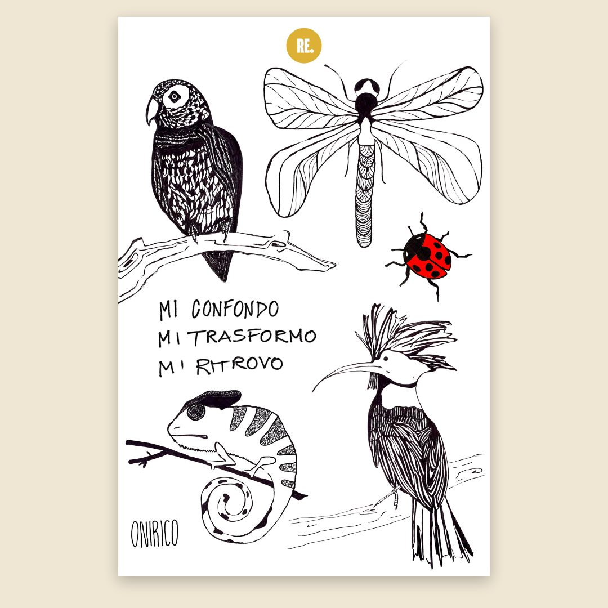

Onirico: upupa, camaleonte e libellula
Una tavola di animali pieni di dettagli, piume, squame e ali da riempire con il filo, e la scritta «Mi confondo, mi trasformo, mi ritrovo». Per chi ha già provato i punti base e vuole un ricamo più ricco.
PDF di 4 pagine A4: come si fa e la tavola · si scarica subito dopo il pagamento

Cinque animali e una frase
- Un'upupa con la cresta aperta
- Un pappagallo e un camaleonte su un ramo
- Una libellula e una coccinella
- La scritta a mano «Mi confondo, mi trasformo, mi ritrovo»
Prima della tavola, tre pagine di spiegazioni: come portare un disegno così ricco sul tessuto, in controluce o con la carta idrosolubile, e come ricamarlo, con i punti per ogni parte e le foto.

Se sei all'inizio
Comincia dai disegni per il ricamo a mano, a linee semplici, e dal video gratuito con i punti base.
Guarda il tutorial dei punti base →
Come porto il disegno sul tessuto?
Due modi, spiegati passo passo nel PDF: metti il foglio su una finestra luminosa, ci appoggi sopra un tessuto di cotone o lino chiaro e ricalchi le linee principali; oppure stampi la tavola su carta idrosolubile, la attacchi al tessuto, ricami sopra e la sciogli nell'acqua. Per questo disegno la carta idrosolubile è la più comoda, perché tiene tutti i dettagli.
Come ricevo il PDF?
Dopo il pagamento si apre la pagina con il pulsante per scaricare il PDF, e ti arriva un'email con lo stesso link, valido 30 giorni.